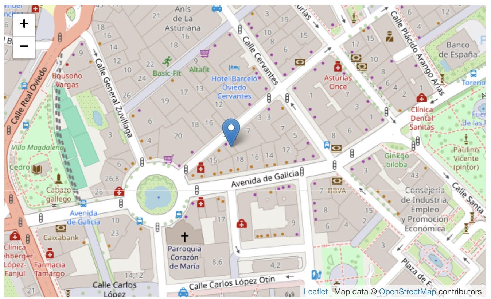
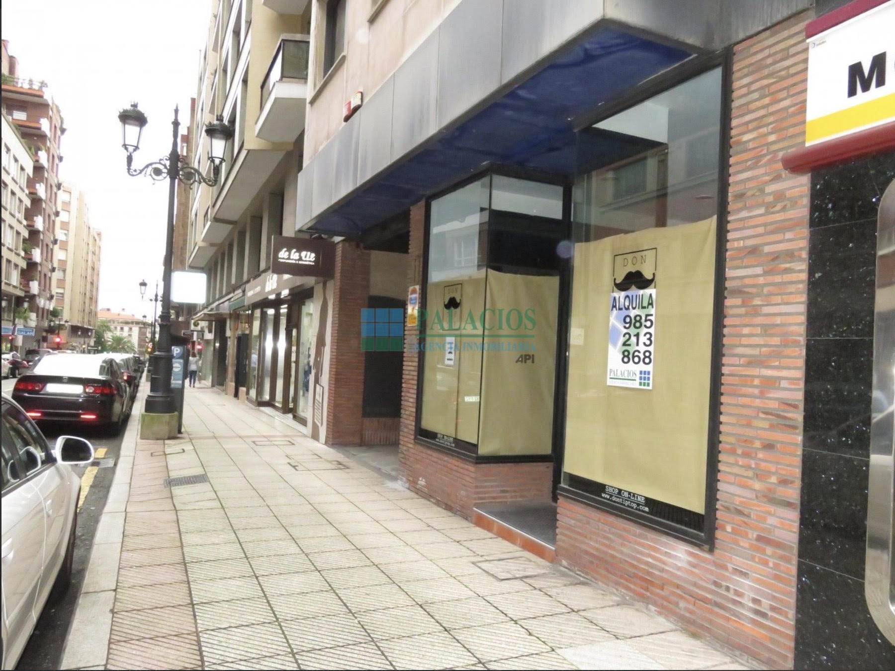
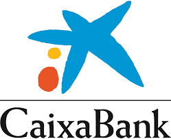
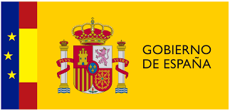

Llevamos dispositivos, formación y acompañamiento digital a las familias que más lo necesitan en Asturias.
En Tecnología Para Todos (TPT) creemos que el acceso a la tecnología no debería depender del bolsillo de cada familia. Trabajamos en Asturias para que ningún niño, joven o adulto se quede atrás por no tener un dispositivo o no saber usarlo.
Nuestra respuesta es rápida, cercana y humana: conectamos a quienes tienen algo que dar con quienes más lo necesitan.
Ayudar a familias sin acceso a la tecnología
Apoyar el desarrollo educativo de jóvenes y niños mediante recursos digitales
Conseguir que todo el mundo pueda usar la tecnología
Reducir las diferencias entre personas con y sin recursos digitales
Tablets, ordenadores y móviles reacondicionados llegan directamente a las familias que más los necesitan, sin coste alguno.
Enseñamos a usar la tecnología de forma segura y útil: desde encender un ordenador hasta navegar por internet responsablemente.
Creamos y coordinamos un equipo de voluntarios comprometidos que acompañan a las familias en todo el proceso.
Trabajamos mano a mano con colegios, institutos y empresas para ampliar el alcance de nuestras acciones y maximizar el impacto.
Operamos desde nuestra sede en la Calle Marqués de Teverga, Plaza de América, Oviedo. Un espacio de 80 m² donde recibimos donaciones, realizamos formaciones y coordinamos a nuestro equipo de voluntarios.


Publicamos infografías y análisis anuales para que sepas exactamente dónde va tu dinero y qué logros hemos conseguido.
Pon cara a las personas que reciben tu apoyo: compartimos historias reales de familias que han transformado su vida gracias a la tecnología.
En España, las donaciones a ONGs tienen deducciones fiscales significativas. Tu generosidad también te beneficia en la declaración de la renta.
Los socios y colaboradores tienen acceso a eventos exclusivos donde conectar con personas comprometidas con el cambio social.
Empresas e instituciones que confían en TPT y nos ayudan a llegar más lejos.


¿Quieres que tu empresa forme parte de este proyecto?
Conviértete en colaborador